My Connect
Designing an intuitive employee experience portal that connects employees, facilitates interaction, and provides a platform for sharing management announcements and updates.
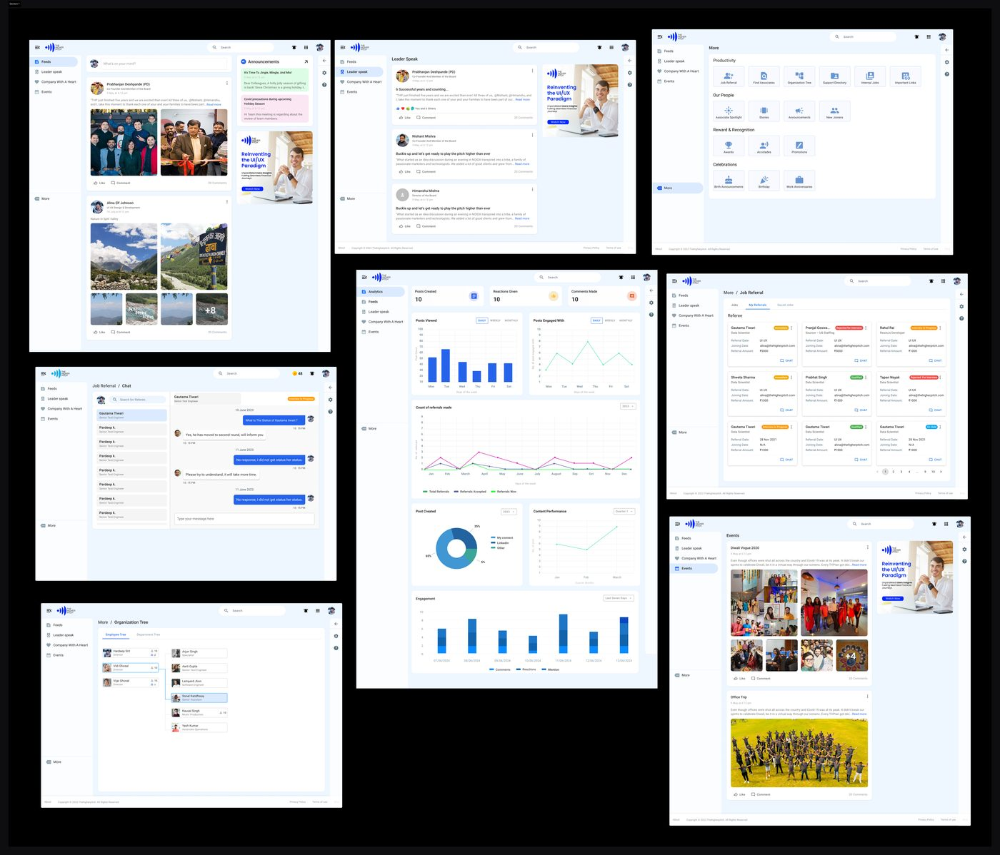
An employee experience platform
built from the ground up.
My Connect represents an innovative Employee Experience web application meticulously crafted to promote and enhance workplace connections, streamline interpersonal interactions, and offer valuable insights into colleagues’ activities.
Introducing AI-powered features. Employees can now use Generative AI to share thoughts or work knowledge in their own words, helping them build stronger profiles. This not only helps individuals grow but also supports the company’s success. They can choose to share their content on My Connect or external platforms like LinkedIn, Facebook, or X (formerly Twitter).
No platform.
No connection.
Mostly company currently lacks a dedicated platform for effective employee interaction and communication. This gap creates several challenges across the organisation.
Many employees are unaware of internal job openings, which prevents them from exploring new career opportunities. There is no simple or consistent way to refer suitable candidates for open positions.
Employees are frequently left out of important company news, updates, and upcoming events. This lack of communication leads to lower engagement and weakens their connection to the company’s goals and culture.
Without a unified platform, employees have no easy way to interact with colleagues, discover mentors, understand the organisational hierarchy, or celebrate each other’s achievements.
Secondary research,
Real interviews.
Secondary Research
This kind of application is not available for research, so instead I checked the Facebook Workplace and Zoho Intranet portal and got some ideas from Zoho Intranet. From there I started gathering the requirements from stakeholders.
CEO, Director, Manager, Junior, Intern
Intranet portal
Within the organisation only — accessible to all employees
20 to 60
Primary Research
My secondary research was the base raw material upon which I was going to establish my building blocks. It helped me fill up the blanks left in the secondary research.
I took the interview of 4 people between the age group of 18–30 and another 2 from the age group of 30–65. Before starting the interview, I made a “pre-requisite” mindset list of all the dos and don’ts I am going to follow throughout the conversation.
To select the right set of audience I took a survey and put it into various social media groups. This helped me screen the person I should interview.
Insights from User Interviews
“It would be great if the platform had a user-friendly interface accessible on both mobile and desktop.”
“Sometimes I miss out on career growth opportunities because I am not aware of internal job vacancies.”
“I often feel disconnected from the company when I am uninformed about crucial news and events.”
“It would be great to have a dedicated space for recognition and appreciation.”
“I wish the platform had a feature to interact with colleagues and view their profiles to know more about them.”
“It will be useful if the platform provides a support directory to connect the actual person from the specific department.”
Personas and empathy maps
to stay grounded in the user.
Created personas and empathy maps to understand more about the user’s problems.
Personas
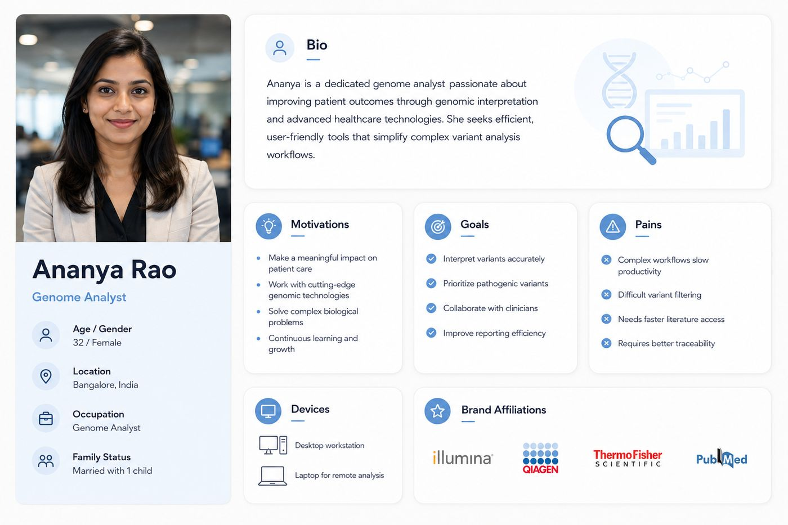
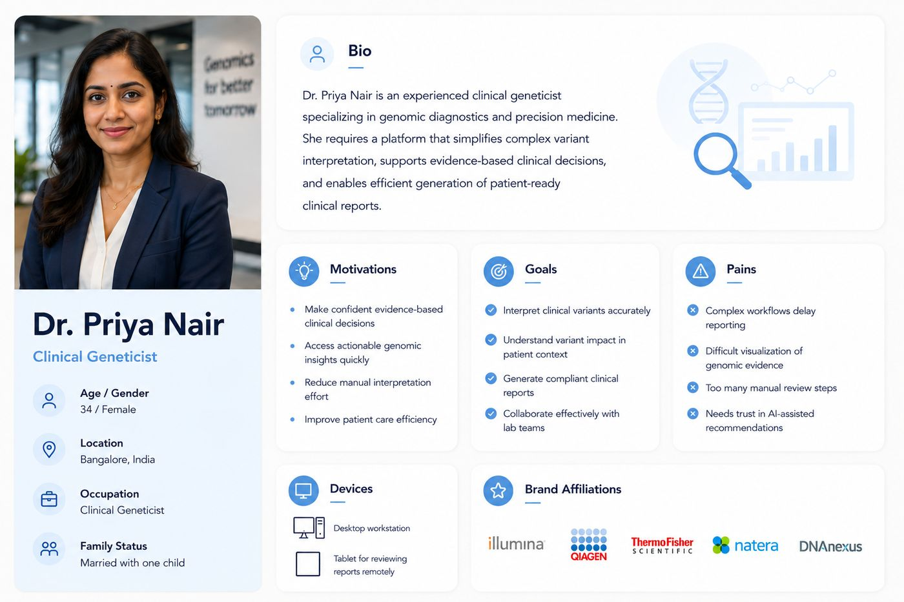
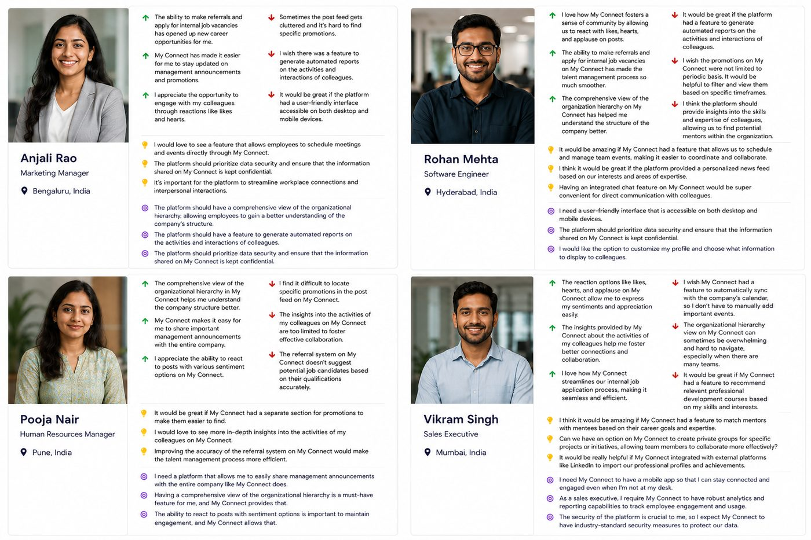
Empathy Mapping
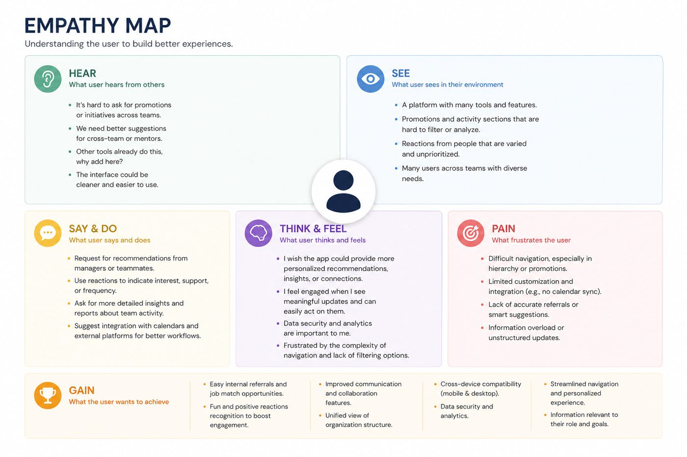
After developing detailed personas based on interviews and user feedback, I created a combined empathy map to capture shared experiences and needs. This map helped me visualise what users are hearing, seeing, thinking, feeling, saying, and doing while using the platform. It also revealed their main frustrations (pains) and what they value most (gains). By identifying these patterns across multiple users, I was able to build a deeper emotional understanding of their journey and pinpoint key areas for improvement in the platform. This insight laid the foundation for defining clear problem statements and prioritising features in the redesign.
How Might We Questions
Based on the user personas and empathy mapping, I framed the following “How Might We” questions to guide the design process:
How might we make the platform easier to use and navigate for all employees?
How can we help users quickly find promotions, posts, and updates that matter to them?
How might we improve the way users explore internal job openings and referrals?
How might we suggest the right mentors or connections based on a user’s skills and interests?
How might we encourage employees to share ideas and feedback more openly?
How can we provide managers with better insights and reports regarding team engagement and activity?
How might we make the company hierarchy clearer and easier to understand?
How might we make sure the platform works well on both desktop and mobile devices?
Low-fidelity wireframes
across all core screens.
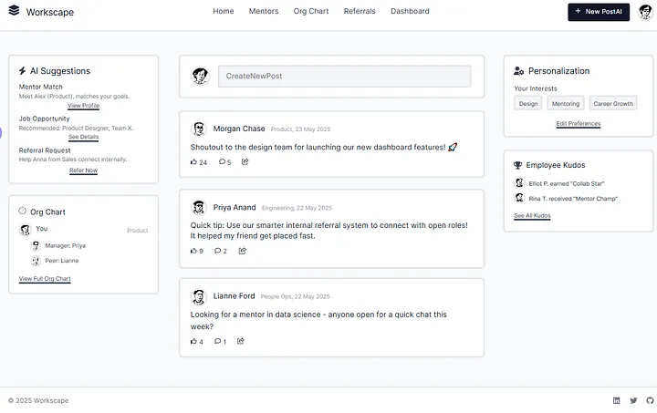
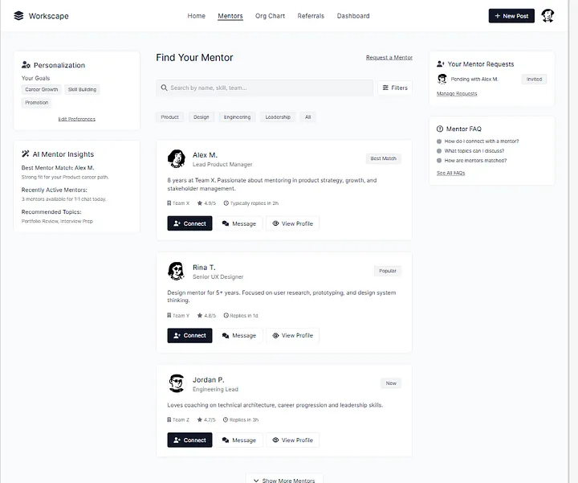
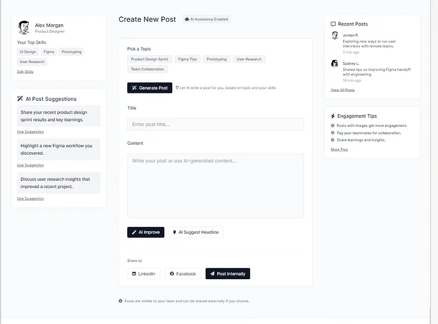
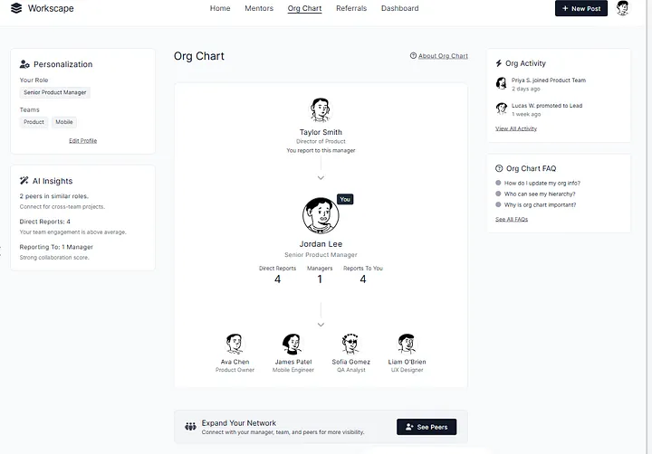
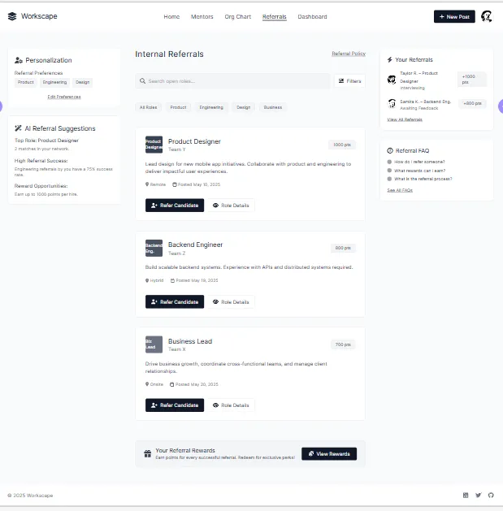
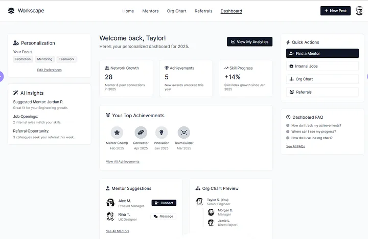
Styleguide, then
visual design.
Styleguide
“I used the MUI Design System and customised it by changing the fonts, colours, and sizes to match the look and feel of the project.”
| Style | Scale | Usage |
|---|---|---|
| H1 | 96 / 116.7 | Hero headlines, page titles |
| H2 | 60 / 120 | Section headers |
| H3 | 48 / 116.7 | Sub-section headers |
| H4 | 34 / 123.5 | Card titles |
| H5 | 24 / 133.4 | Component headers |
| H6 | 20 / 160 | Small labels |
| Subtitle 1 | 16 / 175 | Body emphasis |
| Subtitle 2 | 14 / 157 | Secondary text |
Used for surfaces, navigation, and neutral UI elements. Provides the calm, professional foundation of the interface.
Primary action colour, interactive elements, links, and highlights. Communicates trust and clarity throughout the product.
Visual Design
I used my company logo as a workspace. There are more screens but here I am adding 6–7 only.
Prototype shared.
Pieces of feedback.
I shared the Figma prototype with two to three team members from the company to gather initial feedback. Since development had not yet started, this was an ideal stage to incorporate changes based on their suggestions.
Key Feedback Received
After Getting Approval from the Project Owner
Based on this feedback, I explored multiple design options and started making the necessary improvements to ensure the product meets both user expectations and business goals.
Dashboard Options
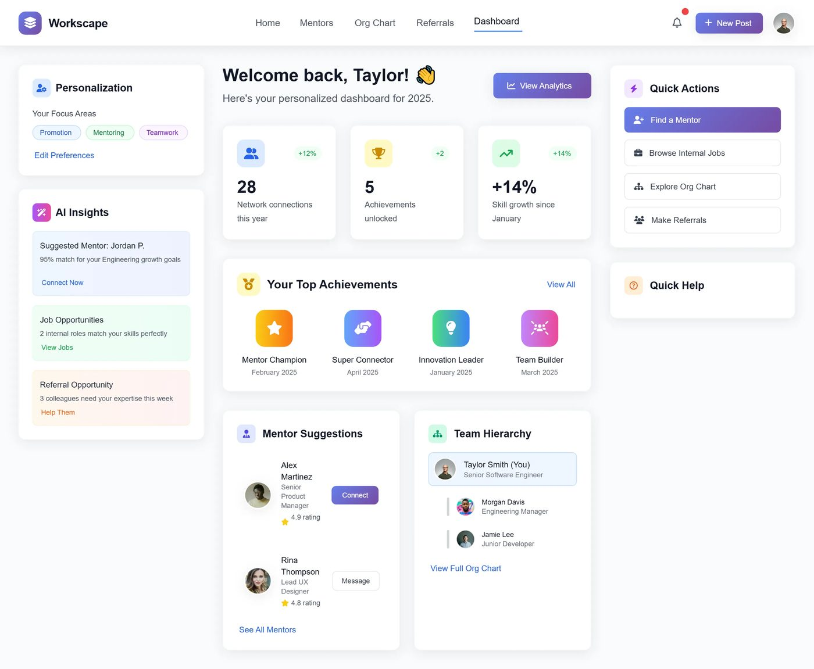
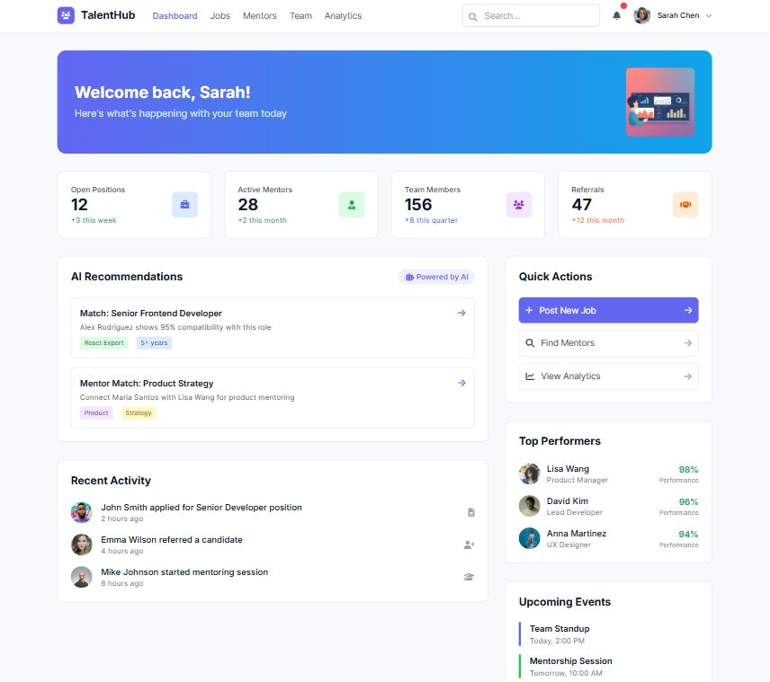
Other Design Pages
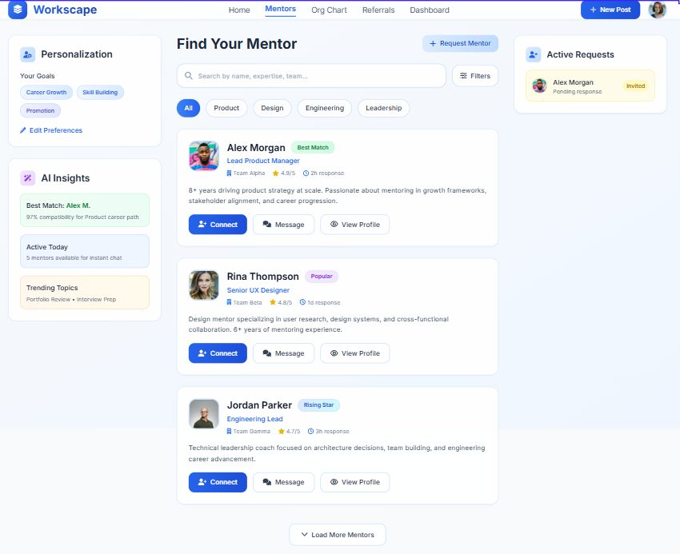
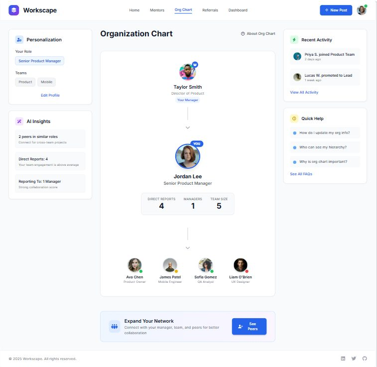
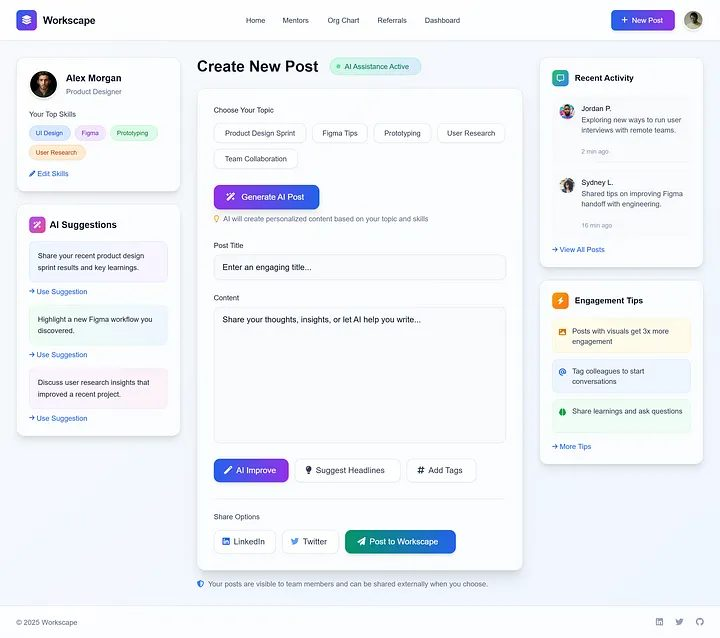
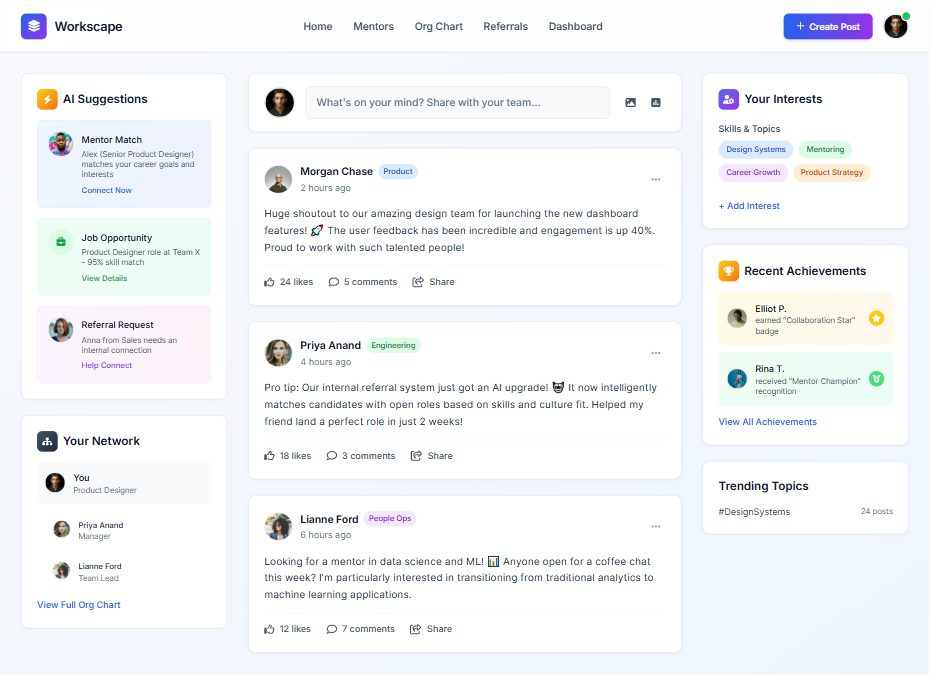
What this project
taught me.
Always gather early feedback before development.
A clear, engaging dashboard is key for quick access.
AI-powered features improve user experience.
Consistency in design reduces user confusion.
Highlight important elements like team hierarchy and quick actions.